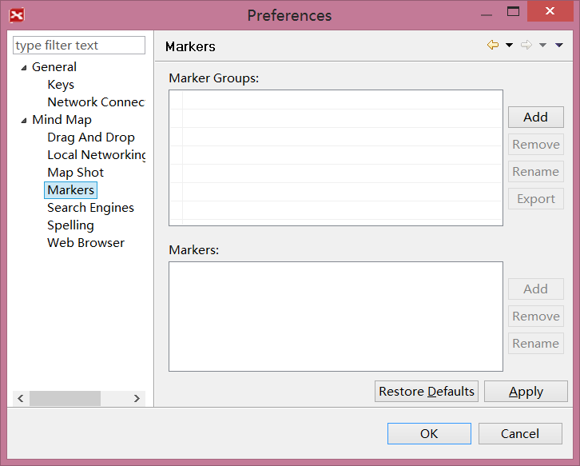
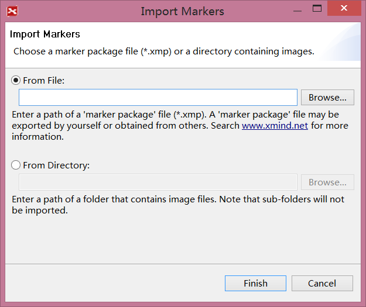
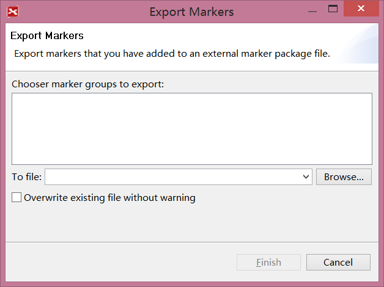

Marker
Markers are image icons used to represent attributes on a map, and are widely used in project management, planning, and other organizational activities. XMind provides a wide array of pre-made markers and allows you to add your own images to the Gallery to be used as markers. You can also import marker group files from other XMind users as your own marker group, or export your own marker group to others. Here's how:
To add a marker(s):
- Select the topic(s).
- Open the Markers View.
- Click the marker you want to add to your map.
- This marker will be added into selected topic(s).

To delete existing marker:
- Select the topic.
- Select the marker.
- Choose one of the following methods to delete the marker:
- Click the 'Delete' key on keyboard directly.
- Right-click the marker with your mouse and select 'delete'.
To use your own markers:
- Open Markers View.
- Click 'Show Marker Manager' icon on view toolbar to open add dialog.
- Click 'Add' beside 'Marker groups' field, and name the new group.
- You can remove, rename, move up, or move down the group added.
- Select the new marker group, click 'Add' beside 'Markers' field.
- Select the image(s) you need, name it, and click 'open' to add into XMind.
- You can remove, rename, move up, or move down the added markers.
- Click 'Apply' to finish this process.
- You can see your own marker group at Markers view.

To import other's markers
- Open Markers View, and click "Import Marker Group" in the view toolbar.
- You can now import Marker Group file('.xmp') or local images from the selected folder.
- Click "Finish".

To Export your own marker group
- Open Markers View, and click the "Export Marker Group" in the view toolbar.
- Select "Marker Groups"
- Select save path, and click "Finish"

Legend
A Legend is a floating box within your map that describes all of the map markers and their specific meanings.
To show legend:
- Select the map.
- Open the Properties View.
- Click on the 'Show Legend' box to toggle the legend on.
- Move you mouse to place legend on the map.
- You can rename any of the markers by double-clicking the current name on the legend.


Note: You can move the legend to any position on the map by dragging the legend with yoru mouse.